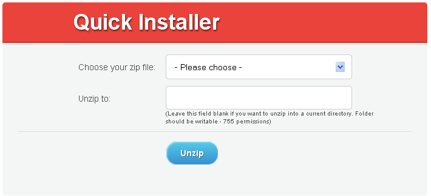
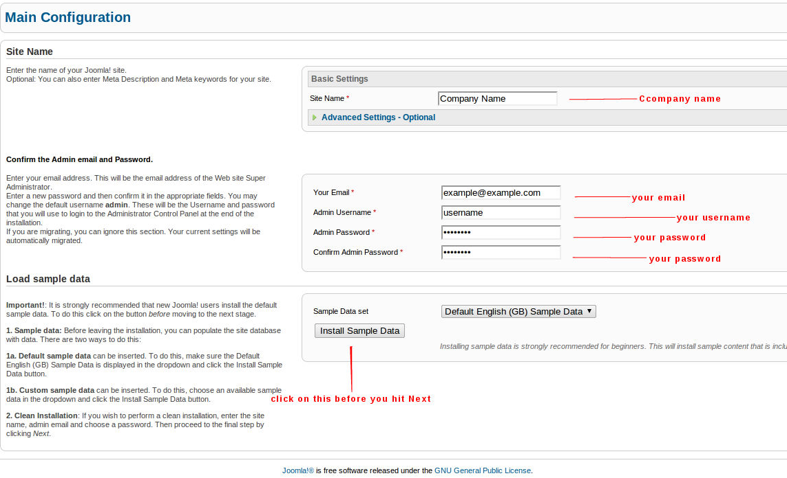
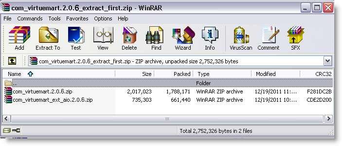
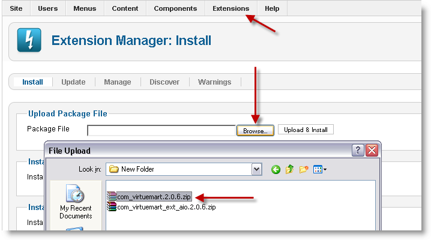
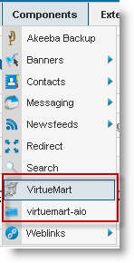
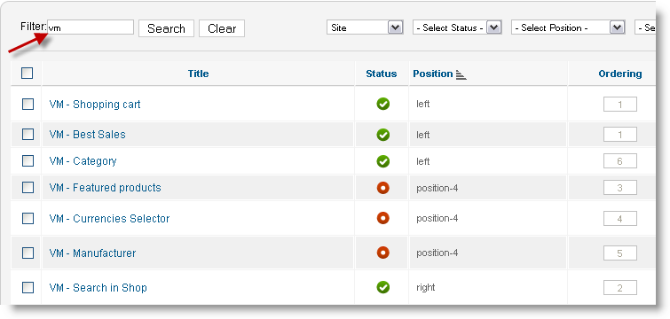
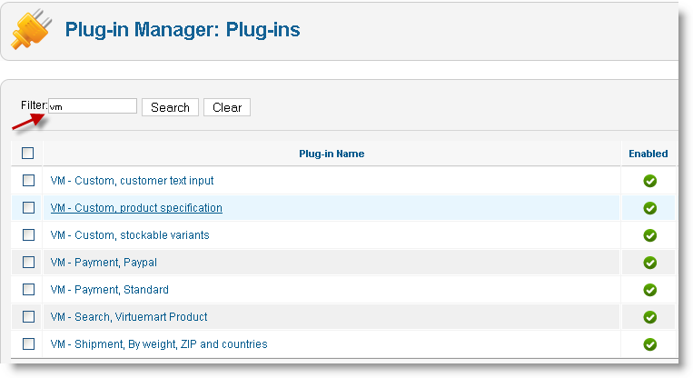
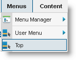
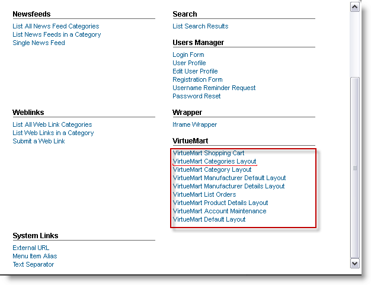
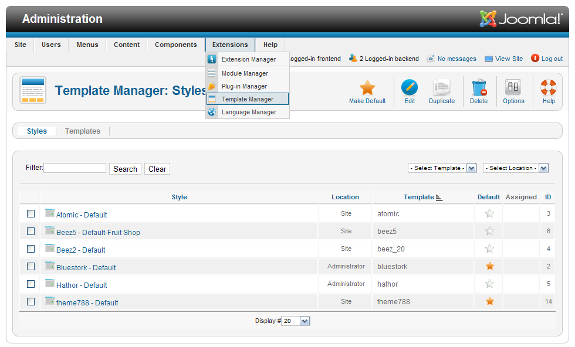

Preparations
Before you proceed to the Joomla engine and Joomla template installation procedures please make sure to perform the following preparation actions.
- Make sure your hosting server meets Joomla and VirtueMart requirements. You can check Joomla requirements here and VirtueMart requirements here.
- As you are reading this manual we assume that you've already extracted files from the downloaded template package. However you may have issues with extracting files from the password protected "sources_###.zip" archive. Feel free to check the detailed video tutorials on how top extract files from the template package on MAC and PC.
- If you have a live website and just want to install the template make sure your Joomla and VirtueMart versions are compatible with the template version.
- Joomla requires a MySQL database to store website data so you need to have one created on your hosting server. Please check the detailed tutorial on how to create a database
Getting started with no Joomla installed
- As soon as the template is downloaded and unzipped you should upload the archive fullpackage.zip using any FTP software like FileZilla or the Filemanager in your hosting control panel.
- When that is done please upload the file unzip.php from the template package to the server into the same directory as the previous archive.
- As soon as you finish please open your site in the browser and add the file name - unzip.php to the URL. It should look like this: yourwebsite.com/unzip.php
- This is what you get:
 - From the drop-down list "Choose your zip file" please select fullpackage.zip and click "Unzip". It will start to uncompress the files on your server into the same directory. It will take a little while.
- As soon as it is unzipped, you will see the list of files. Please open your site in the browser, - yourwebsite.com and start Joomla installation.
Feel free to check detailed video and text instructions on how to install Joomla content management system
- On Step 6 in your installation - "Main Configuration" it is necessary that you click "Install Sample Data".
 - As soon as the installation is complete, the template with the default content will automatically be activated on your site and will look like the demo on our template preview page.
-
The last but not least important step is to update the database:
Go to Components->VirtueMart->Tools->Tools & Migration - click "Install tables or if necessary update them" button.
Getting started with Joomla sample content installed (no custom data)
First please install the template following the directions in Getting started if you have the site up
Our templates are supplied with the sample pages, modules and configuration settings. In other words to make the template look as at the preview you need to install and configure the modules.
If you want your site look like on the demo you should install the dump.sql file that is located in the "sources" folder. Before importing the dump please make sure to change the default database prefix in the dump file ("jos_") to the tables prefix which is used in your Joomla database. In order to find out your Joomla database prefix please login into Joomla Admin, "Global Configuration" → "Server" and find "Database Tables Prefix". Then open your dump.sql file with any text editor (preferably Dreamweaver or Notepad) and replace all instances of "jos_" with your Joomla database prefix in the entire document using the Find and Replace tool (usually the Ctrl+H hot key). E.g.: xyz_
If you want your site look like the demo you should install the dump.sql file.
ATTENTION: import .sql file ONLY if your site is a clean installation of Joomla! CMS, and you have not yet created any content, articles, modules, etc. This step will erase all the work you've already done to your site. Otherwise, skip this step and read the next one - "Manually configuring template modules"
To install dump.sql file you should do the following:
- Open your PHPMyAdmin tool (which is part of your Hosting Control Panel).
- Select the database you created for Joomla! CMS.
- Select "IMPORT" option and click "Browse" button
- Navigate to the "sources" folder of the template and select dump.sql file.
- Press "GO" button. When the import is done, you need to complete only one more step, described in this document - "7. Images Preview"
If you don't have much experience with PHPMyAdmin tool, please check this tutorial on how to complete the steps above:
The last but not least important step is to update the database:
Go to Components->VirtueMart->Tools->Tools & Migration - click "Install tables or if necessary update them" button.Getting started if you have the site up
Virtuemart.2.0.18a. installation
Step by step instructions on how you could easily install Virtuemart 2.0.18a.
Virtuemart 2.0.18a. has been released recently and it can be install with Joomla 1.5. and Joomla 2.5.8 In this tutorial you will learn how to install Virtuemart on Joomla 2.5.6
It is an assumption that you have already installed Joomla 2.5.8 Feel free to check detailed video and text instructions on how to install Joomla content management system
1. First you must download the latest package of Virtuemart 2.x.x here. You will need to download the file com_virtuemart.2.0.18a_extract_first.zip.
2. Once the file is downloaded, unzip it into a desired folder. I would just place them on the Desktop for easy access. Inside the zip file there will be two files:
- com_virtuemart.2.0.18a.zip
- com_virtuemart_ext_aio.2.0.18a.zip

3. Now login into the Joomla admin panel with your username and password.
4. Click on the menu Extensions > Extension Manager.
5. Click on Browse button, and select the file com_virtuemart.2.0.18a.zip file. Then click the Upload & Install button.

You should see the message "The installation was successful".
6. Next install the other file com_virtuemart_ext_aio.2.0.18a.zip. Again click on Browse button, and select the file com_virtuemart_ext_aio.2.0.18a.zip file. Then click the Upload & Install button. Once installation is successfully finished, you should see a Virtuemart link under Components menu.

7. Now check to see if the following plugins and modules have been installed.
Click on top menu Extensions > Module Manager. In the filter box type in vm and click on Search. You should then see the following Virtuemart modules.

Do the same for the plugin. Click on top menu Extensions > Plug-in Manager. In the filter box type in vm and click on Search. You should then see the following Virtuemart plugins.

8. Now go back to the Module manager and enable desired modules you would like to use on your website front end. You can also set the position where it would sit on the webpage. You can now go to your site front end and check out the new virtuemart module.
9. Next you will need to create a new menu link so the site users could navigate to your shop. To do so, click on Menus and select a desired menu you would like to create a link in. For example you could add a link to the top menu, side menu and etc.
In this example we will use the top menu. So click on Menus > Top.

10. Next click on the New button, from the top navigation panel.
11. Under Details, click on the Select button next to the field Menu Item Type *.
Then from the popup, you will have the option to create a menu for:
- VirtueMart Categories Layout
In this tutorial we will select VirtueMart Categories Layout.

12. Now give your link a Menu Title, and click on Save and Close button at the top.
Template Installation
Installing through Joomla! CMS Extensions Manager:
- In the administration section of your Joomla! website go to the Extensions - Extensions Manager.
- Then in the "Upload package file" section open the Package File upload dialogue box by clicking on the "Browse" button.
- Find the themeXXX.zip archive from the "joomla" folder in your downloaded template package, click Open and then click "Upload & install".
Template Activation
When you are done with the template installation you should activate it. Open Joomla! administration section, then using the main menu please, go to the "Extensions - Template manager" page.
Then choose the newly installed template by clicking the checkbox and click "Make Default" button in the upper right corner. This will enable your template as a default one for your site.
Then click the template name to enter the template configuration page. You should assign the template to the website pages. To do this click "Toggle Selection" button in the "Menus assignment" section. 
Third-party extensions installation
The template may have some modules that are not included into the default Joomla! installation and should be installed manually. The procedure is the same as described in the step 1 of this document.
- From Joomla! administration panel select "Extensions - Extensions Manager".
- Click the Browse button and select the extension package from the template "sources" folder.
- Click the "Upload & Install" button.
- Then go to the "Extensions - Module manager" page. The newly installed module should appear in the modules list.
Open the module and set the configuration options according to the Modules Configuration table.
Modules Configuration
- In Joomla! administration section please, go to "Extensions - Module Manager";
- Open each module from the list below, assign it to the given position and set the configuration options from the following table:
# Name Type Position Class Suffix Show Title Order Pages Additional info 1 Currency: mod_virtuemart_currencies user5 yes 1 All 2 Footer mod_footer footer no 1 All 3 Breadcrumbs Advanced mod_breadcrumbs_advanced syndicate _Breadcrumbs no 1 Online Store
Home
Manufacturer Default Layout
List Orders
User Edit Address
Display Vendor contact
Category Layoutsource/mod_breadcrumbs_advanced_j17.zip 4 Google Map mod_JGMap right _map yes 1 Contacts source/mod_JGMap(1.6)-0.15.5.zip 5 The Company Name mod_custom left _address yes 9 Contacts source/The Company Name.html 6 Slideshow CK mod_slideshowck user8 _slider no 1 Home source/mod_slideshowck.zip 7 VirtueMart Ajax Search mod_vm_ajax_search user4 _ajax_search no 1 All source/mod_vm_ajax_search_for_vm2.zip 8 Top_menu mod_superfish_menu user3 no 1 All source/mod_superfish_menu_v2.1.zip 9 Categories mod_virtuemart_category user7 -category no 1 About Us
Home
Online Store
Home
Delivery
FAQs
Manufacturer Default Layout
List Orders
User Edit Address
Display Vendor contact
Category Layout
About joomla!
Wrappers
Reviews
News
Create an Account
Advanced Search
Order History
Shipping & Returns10 Shopping cart: mod_virtuemart_cart_tm user6 } yes 1 All source/mod_virtuemart_cart_tm.zip 11 Random mod_virtuemart_product right _new random yes 1 About Us
Home
Online Store
Home
Delivery
FAQs
Manufacturer Default Layout
List Orders
User Edit Address
Display Vendor contact
Category Layout
About joomla!
Wrappers
Reviews
News
Create an Account
Advanced Search
Order History
Shipping & Returns
Group Salessource/mod_virtuemart_product.zip 12 Banner_1 mod_banners user8 _banner_1 no 1 Home
Home13 Featured Products mod_virtuemart_product user2 _new feat yes 1 Home
Homesource/mod_virtuemart_product.zip 14 Login Form mod_login right _login yes 0 All 15 foot-menu mod_menu user9 _foot_menu no 2 All 16 Footer Categories mod_virtuemart_category user9 -categories no 1 All 17 Banner_2 mod_banners user9 _banner_2 no 4 All 18 Custom_footer mod_custom user9 _custom no 3 All source/Custom_footer.html - After all the necessary changes are applied save the values of each module by clicking the "Save & Close" button in the upper right corner.
- You also need to upload the following folders to the root of your Joomla! installation:
sources\to_the_root_directory\administrator
sources\to_the_root_directory\components
sources\to_the_root_directory\images
sources\to_the_root_directory\media
sources\to_the_root_directory\modules
sources\to_the_root_directory\plugins
To make your Joomla! look like our live demo please, install the database dump that is located in sources\dump.sql.
ATTENTION: By default Joomla! 2.5 installation comes with only the Main Menu module installed. Therefore to make your Joomla! site look like our live demo please, install all necessary modules through the administration section of your site. You may also need to add all the menu items and articles by yourself.
How to add new Custom HTML modules to your template
Some templates may contain the custom HTML modules that should be installed manually.
Note: If you performed the dump.sql file import you may skip this step.
Before working with Custom HTML modules we highly recommend to disable the Joomla WYSIWYG editor.
Please, enter the Joomla! administration panel, and go to the Site → Global Configuration. Find the option "Default Editor" and select "No Editor". Default Joomla! WYSIWYG editors may modify the custom HTML module's code and cause you some issues.
- Then go to the Extensions → Module Manager page. Press the "New" button in the top right corner
- select "Custom HTML";
- in the "Title" field type the title of your new module;
- in the "Position" field choose the correct position for the new module from the Modules Configuration table above (Step 4);
- in the "Module Class Suffix" field please, type the appropriate class suffix specified in the Modules Configuration table;
- in the "Custom Output" text area please, put the HTML code provided in the appropriate file from the template "sources" folder. The correct filename could be found in the Modules Configuration table.
Conclusion and other notices
Note, this template uses JCH Optimize plugin for combining and minifying of CSS and JS files to make your website load faster. We recommend you to disable it on development phase while customizing the template or any other parts of your website.
In case you are having any difficulties with implementing/functionality of any newly installed plugin, extension or component you can add it to the JCH Optimize plugin's exceptions list: Extensions - > Plug-in Manager -> System - JCH_Optimize - >Advanced Options\Exclude individual extensions.